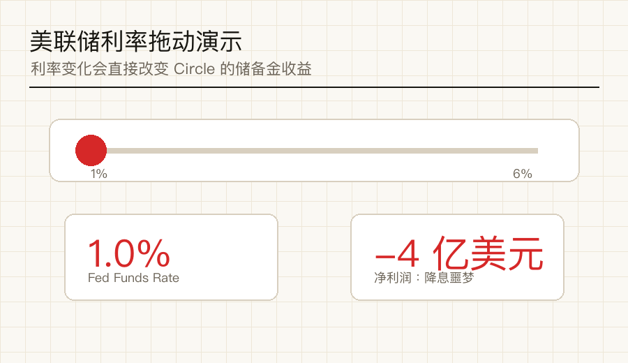
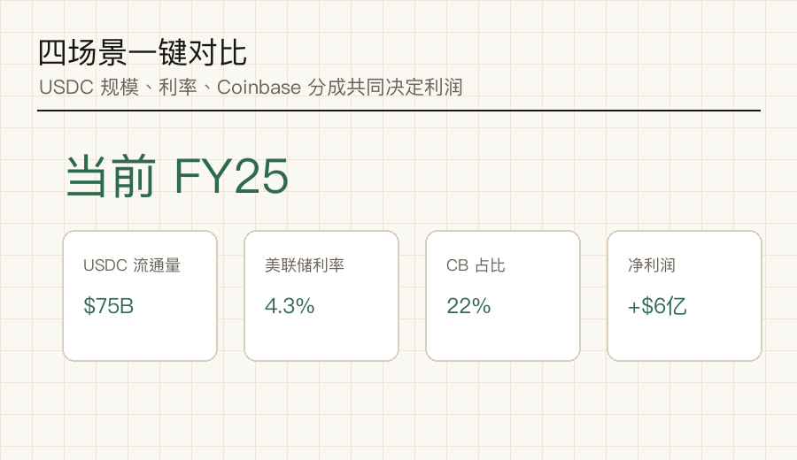
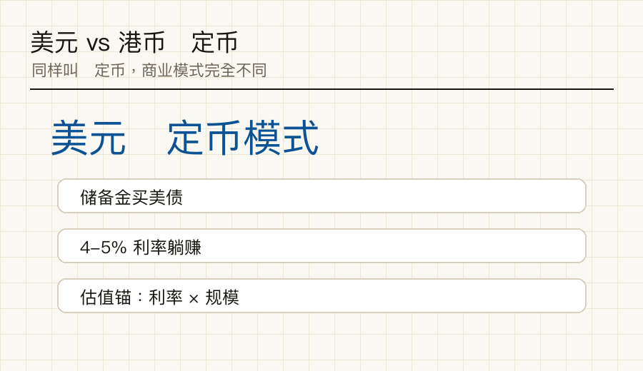

CRCL 上市后涨了 700%+，我一直没敢碰。
不是不看好，是真的看不懂——一家"发币"的公司凭什么对标银行估值？储备金到底怎么管？为什么市场说它"靠美联储吃饭"？这门生意的天花板在哪？
研报看了几篇，越看越糊涂。
今天突发奇想，干脆让 Claude 给我讲一遍——不止讲，还让它做了一个带滑块的互动讲解工具，我拖一拖看数字怎么变。两个小时后，终于摸到了门道。
下面是我学到的，分享给同样困惑的你。
Circle 不是科技公司
它是一家不付利息的"奇葩银行"
商业模式简单到反常识：
USDC 在全球流通了 753 亿美元（2025 年末），意味着 Circle 手里管着 753 亿"零成本的存款"。它的全部商业模式就是吃这笔钱的利息差。
那你图什么？图速度、可编程性、绕过传统银行——加密世界里需要一个"稳定的美元代币"，你放弃利息换的是基础设施。
FY2025 Circle 总收入 27 亿美元，看看是怎么来的——
96 分钱里有 96 分是利息收入。
这就是为什么它的财报本质上是一份"利率敏感型资产负债表"，不是科技公司估值能套的东西。
这是我之前一直没看明白的地方。
Circle 每赚 1 美元，60 美分要交给 Coinbase。
为什么？因为 2018 年 USDC 刚起步时，Coinbase 是 USDC 触达用户的唯一渠道，Circle 签了一份至今解不了的协议：
| 条款 | 内容 |
|---|---|
| CB 平台上的 USDC | 利息 100% 归 Coinbase |
| 其他渠道的 USDC | 利息 50/50 平分 |
| CB 持有占比 | 2022 年 5% → 2025 年 22%（$120 亿） |
| 合约 | Circle 不能单方面退出，3 年自动续约 |
这是 Circle 和"科技股"最不像的地方——它的命门是美联储。
Claude 给我做了一个互动模拟器，可以拖动美联储利率从 1% 到 6%，看 Circle 净利润怎么变。

发现什么？
降息 100bps → Circle 净利润直接少约 $3 亿。这就是为什么 CRCL 股价波动这么大——市场每次预期降息加快它就跌，反之就涨。它的股价里嵌了一个"美联储看涨期权"。
我问 Claude："那它的利润上限是不是确定的？"
Claude 给我列了 3 个驱动因子：① USDC 流通量（基数）② 美联储利率（单位回报）③ Coinbase 占比（分润比例）。
然后给我做了一个 4 场景一键对比的工具——

| 场景 | USDC | 利率 | CB% | 净利 |
|---|---|---|---|---|
| 当前 (FY25) | $75B | 4.3% | 22% | +$6亿 |
| 🚀 牛市 | $200B | 5.0% | 25% | +$30亿 |
| 📉 降息噩梦 | $100B | 2.0% | 30% | ≈ $0亿 |
| 🤝 CB 续约 | $120B | 4.0% | 22% | +$11亿 |
• USDC 翻 6 倍（$75B→$500B），利润只翻 4 倍——因为 CB 同步多分钱
• 降息 1% 比 CB 多占 5% 杀伤更大
• 极端降息场景下直接亏损
所以 Circle 的利润天花板，本质上是被"美联储利率 × Coinbase 不平等条约"压住的。
这是这次研究的意外发现。
监管选的不是"流量+场景"，而是"银行级合规 + 储备金管理能力"。香港金管局总裁原话："先严，走稳，然后按照实践经验再适度放松"。
但更有意思的是——港币稳定币和美元稳定币赚钱方式完全不一样。

| 维度 | 美元（Circle） | 港币（汇丰/碇点） |
|---|---|---|
| 核心收入 | 美债利息（4-5%） | 利息 + 跨境手续费 + RWA |
| 利率天花板 | 美联储 | 港元被动跟美元 |
| 市场规模 | 美债 $28 万亿 | HKD M2 仅 $2 万亿 |
| 商业本质 | "利率躺赚" | "基建 + 牌照壁垒" |
港币稳定币不会和 USDC 抢加密市场，它的主战场是粤港澳跨境贸易 + RWA 代币化结算。汇丰、碇点这类持牌玩家，估值逻辑完全不能套 CRCL 那套，是更慢但更稳的"金融基建"故事。
前面第四段我们说"加息=幸福，降息=噩梦"。这是静态测算给的结论——拖滑块看净利润，利率越高赚得越多，看起来天经地义。
但这里有个坑：那张 GIF 只算了一件事——利率上升对储备金收益率的影响。它假设 USDC 流通量是固定的 $75B。
可现实中，USDC 规模不是固定的
加息本身会砍掉这个基数
三条传导链解释为什么：
| 传导链 | 机制 |
|---|---|
| ① 机会成本 | 加息后大资金宁愿直接买 5% 美债，谁还存 0 利息的 USDC？ |
| ② 加密寒冬 | 加息→流动性收紧→BTC/ETH 跌→DeFi 萎缩→USDC 链上需求降 |
| ③ 风险偏好 | 加密整体盘子缩水，USDC 作为"计价货币"需求降 |
2022-2023 加息周期的实证数据 hit 你一下：
| 时间 | 美联储利率 | USDC 流通量 | 变化 |
|---|---|---|---|
| 2022 年初 | 0.25% | $530 亿 | 基准 |
| 2023 年中 | 5.25% | $260 亿 | 腰斩 ↓51% |
| 2025 年末 | 4.3%（降息后） | $753 亿 | 回血 +189% |
USDC 流通量是反加息周期的——加息越猛，规模缩得越厉害。把这个动态算回去：
所以 Circle 真正的"甜蜜区间"其实是 3.5%-4.5%——利率够高吃到利息，但还没高到把 USDC 持有者赶跑。这就是 2025-2026 年它利润和规模能同步爆发的原因。
看 Circle 不要只盯利率。真正的估值锚是"利率 × USDC 规模"双因子，二者在加息周期里有内在矛盾。这才是研报里看不到的一层。
| 问题 | 答案 |
|---|---|
| CRCL 现在贵不贵？ | 估值不便宜，等安全边际 |
| 看 Circle 看什么？ | ① USDC 流通量 ② 美联储 ③ 2026 CB 续约 |
| 香港稳定币谁受益？ | 汇丰（0005.HK）首批拿牌 |
| 普通人怎么用？ | 跨境支付（USDC 比 WU 便宜 10x） |
不管是金融、技术、还是其他任何领域——遇到一个研究了很久还是没搞懂的，试试让 Claude 给你做一个"互动讲解"。
把你的困惑直接告诉它，让它给你画图、做模型、做带滑块的模拟器。我这次从"看不懂 Circle"到"摸清商业模式"，前后两个小时。
比读十篇研报快多了。
公开网页长读版部署在这里